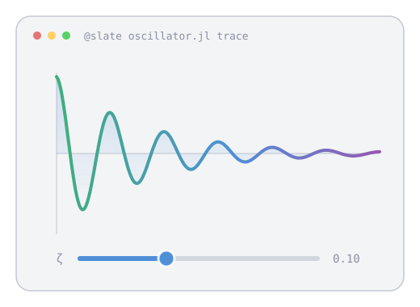

DocumenterSlate
Live notebooks in your docs
Reference a Kaimon Slate notebook from any Documenter page. Its prose becomes your page, its code your code blocks, and its charts, tables and controls stay interactive.

📓
Write a notebook, reference it
One line in a page places a whole notebook, or a single cell of it. No export step.
🎛️
Controls that work on a static page
Sliders and selects keep driving charts, tables and prose, from sweeps computed when the notebook was rendered.
🌗
Fits the site it lands in
Follows the site's light and dark theme, and works with Documenter, DocumenterVitepress and MaterialDocs.
⚙️
Rendered by your docs build
CI runs each notebook in its own Slate worker as part of the build, with the fidelity of the live notebook.
One cell, live
The chart below is a cell of the damped oscillator notebook. Drag the slider on that page and it moves; here it shows the notebook's current state.